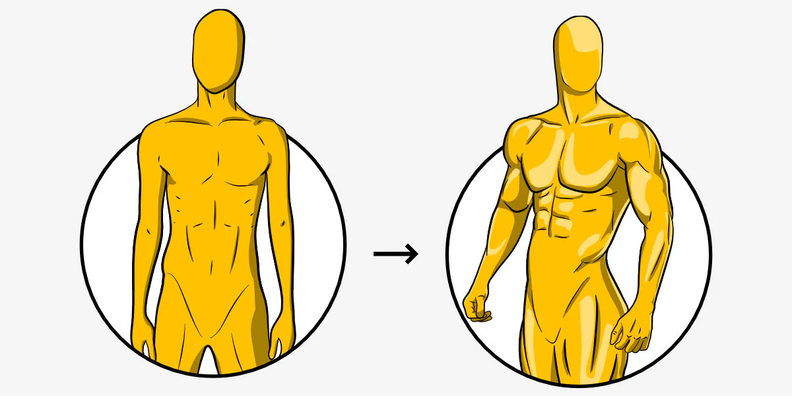

I intend to spread information that I have learned and experienced throughought my few years getting into fitness. Im this case, mainly weightlifting, and slowly diverging into
a larger appeal to nutrition and biomechanics.
By the many variations of training programs I have experimented with, I am looking to provide the most effective rotation of workouts that
have worked for me, in the 3.5 years of lifting, to gain a substantial amount of muscle, strength, endurance, and aesthetics.
Be assured not every workout is best fit for everyone, but in a general standpoint, I have chosen the ones I find efficient.
For more information on areas such as nutrition and muscle building, refer to this article for an studied approach: Dietary Protein and Muscle Mass